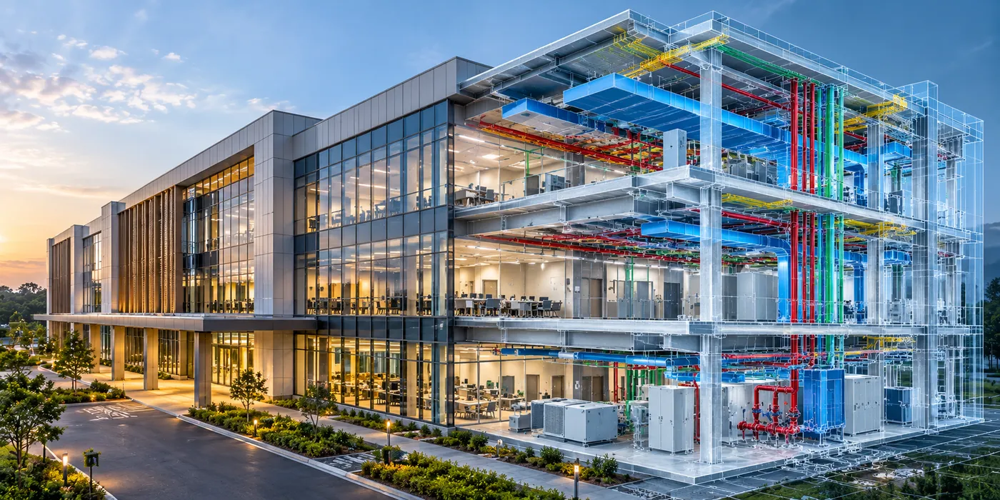

The Assignment
The assignment required the development of a coordinated digital representation of a building environment, bringing architectural, structural and MEP disciplines together within an integrated BIM framework.
The objective was to create coordinated multidisciplinary models that could improve visualization and design coordination, identify potential conflicts between building systems and provide structured digital information to support subsequent project and asset lifecycle requirements.
Our Approach
CS TECH Ai developed coordinated BIM models integrating architectural, structural and building-services information within a common digital environment.
The engagement included:
- Development of architectural BIM models
- Structural modelling and coordination
- MEP modelling covering building-services systems
- Integration of multidisciplinary models into a coordinated digital environment
- Coordination between architectural, structural and MEP elements
- Identification of spatial conflicts and potential constructability issues
- 3D visualization to support design understanding and coordination
- Development of digital building information to support project documentation
- Creation of structured model information capable of supporting subsequent asset and facility-management requirements
- Digital Twin modelling to provide a comprehensive digital representation of the built asset
The integrated modelling approach enabled the different building disciplines to be viewed and coordinated together rather than being managed as disconnected design information.